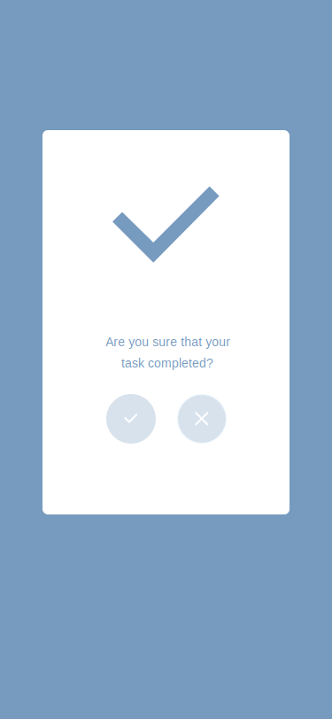
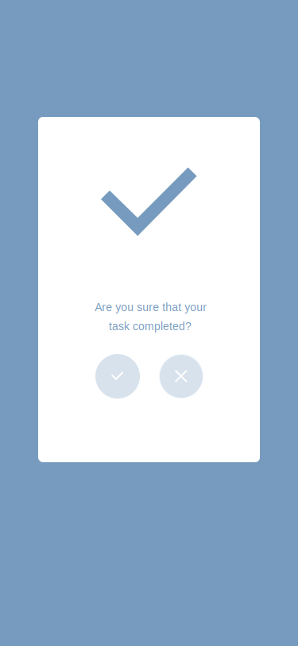
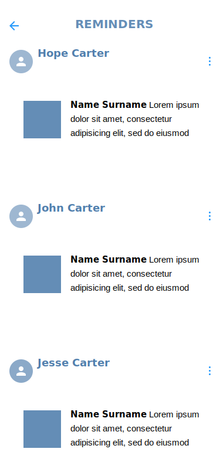
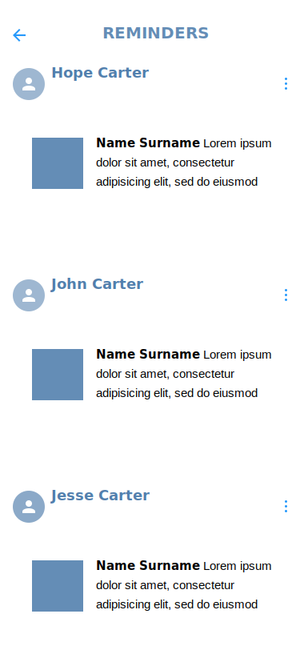

Telemedicine
UI Design
Project Overview
Telemedicine aims to streamline the process of scheduling and managing appointments with healthcare professionals. It provides users with a convenient platform to find doctors, book appointments, receive reminders, and manage their medical records all in one place.
My Role
As the lead UI designer, my role was to conceptualize, design, and wireframe the user interface.
Tools
Adobe XD
Timeline
7 Weeks
Goal
Telemedicine aims to provide users a seamless and intuitive experience for scheduling appointments with healthcare providers. It simplifies the process of finding doctors, booking appointments, and managing medical records, ultimately improving users' access to healthcare services.
Competitive Research
During the initial phase of the project, we conducted extensive research to analyze existing doctor appointment apps in the market. Some of the key competitors we studied include:
- Zocdoc: Known for its comprehensive database of healthcare providers and user-friendly interface.
- Healthgrades: Provides users access to patient reviews, ratings, and appointment scheduling for healthcare professionals.
Findings
Through our competitive research, we identified several strengths and weaknesses of existing doctor appointment apps:
Strengths
- User-friendly interfaces with intuitive navigation.
- Comprehensive databases of healthcare providers.
- Features such as patient reviews and ratings to aid decision-making.
Weaknesses
- Complex appointment scheduling processes.
- Limited customization options for appointment reminders.
- Inconsistent user experiences across different platforms.
Solutions
Based on our findings, I implemented the following solutions to address the identified weaknesses and enhance the user experience of Telemedicine:
- Simplified Appointment Scheduling: Streamlined the appointment booking process with a user-friendly interface and intuitive navigation, allowing users to book appointments with just a few clicks.
- Customizable Reminders:Introduced customizable reminder settings, allowing users to set preferences for appointment reminders based on their individual needs and preferences.
- Consistent User Experience: Ensured consistency in design and functionality across the platforms to provide a seamless experience for all users.
Wireframes
 

 

Reflections
Throughout the design process, I encountered various challenges and made several key decisions to ensure the success of Telemedicine. By leveraging insights from competitive research and incorporating user feedback, I created a user-centric design that meets the needs of our target audience. Moving forward, continuous iteration and refinement will be essential to maintaining the app's competitiveness in the ever-evolving healthcare technology landscape.